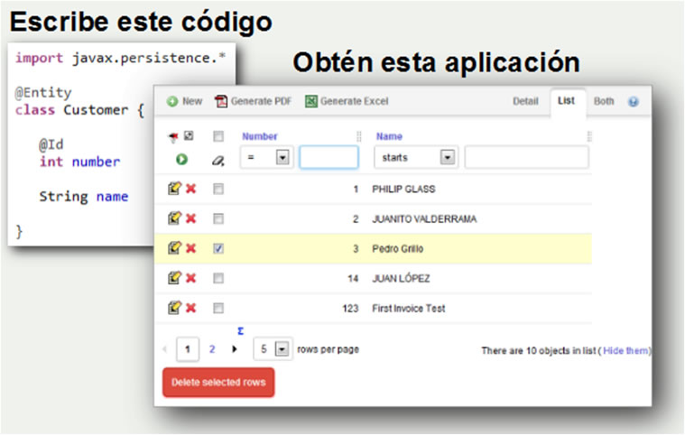

En esta oportunidad mostrare como usar el framework de desarrollo rapido: Opexava. Es muy interesante este framework ya que puede ser una solucion rapida para proyectos sin tiempo, para demos, incluso para proyectos empresariales. Como todo tiene sus ventajas y desventajas. Pero no esta demas conocerla.
Requisitos:
- Openxava Framework
- Mysql
- Eclipse
Como funciona?
Openxava crea una web completa apartir de una entidad, clase, bean o pojo java :

Conceptos Basicos:
Las piezas fundamentales para crear una aplicación OpenXava son los componentes, en el contexto de OpenXava un componente de negocio es una clase Java
Un controlador es un conjunto de acciones. Una acción es un botón o vínculo que el usuario puede pulsar.
Una aplicación OpenXava es un conjunto de módulos. Un módulo une un componente de negocio con uno o más controladores.
Pasos para desplegar una aplicacion openxava en el tomcat
1. Descargar de la web el zip correspondiente : http://www.openxava.org/es/web/guest/downloads
2.Descomprimir el zip y con el eclipse abrir la carpeta workspace :
Viendo,en el eclipse algo como esto:
File : pom.xml
<project ...> <repositories> <repository> <id>JBoss repository</id> <url>http://repository.jboss.org/nexus/content/groups/public/</url> </repository> </repositories> <dependencies> <dependency> <groupId>org.hibernate</groupId> <artifactId>hibernate-core</artifactId> <version>3.6.3.Final</version> </dependency> <!-- slf4j-log4j --> <dependency> <groupId>org.slf4j</groupId> <artifactId>slf4j-log4j12</artifactId> <version>1.6.1</version> </dependency> </dependencies> </project>
The slf4j-api.jar is defined as the dependency of “hibernate-core“, so , you do not need to declare it again.
2. Log4j properties file
Create a “log4j.properties” file and put it into your project’s classpath, see figure below :

File : log4.properties
# Direct log messages to a log file log4j.appender.file=org.apache.log4j.RollingFileAppender log4j.appender.file.File=C:\\mkyongapp.log log4j.appender.file.MaxFileSize=1MB log4j.appender.file.MaxBackupIndex=1 log4j.appender.file.layout=org.apache.log4j.PatternLayout log4j.appender.file.layout.ConversionPattern=%d{ABSOLUTE} %5p %c{1}:%L - %m%n # Direct log messages to stdout log4j.appender.stdout=org.apache.log4j.ConsoleAppender log4j.appender.stdout.Target=System.out log4j.appender.stdout.layout=org.apache.log4j.PatternLayout log4j.appender.stdout.layout.ConversionPattern=%d{ABSOLUTE} %5p %c{1}:%L - %m%n # Root logger option log4j.rootLogger=INFO, file, stdout # Log everything. Good for troubleshooting log4j.logger.org.hibernate=INFO # Log all JDBC parameters log4j.logger.org.hibernate.type=ALL
With this log4j configuration, it will redirect all the logging output to console and also a file at “C:\\mkyongapp.log“.
Hibernate provides many settings to let developer to decide what to log. Always refer to this Hibernate Log Categories, choose some and implement it in your log file.
3. Output
Try run your Hibernate web application, all logging output will be logged in “C:\\mkyongapp.log” file. See figure below :